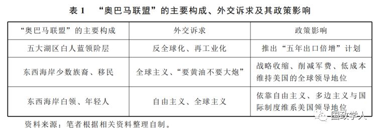
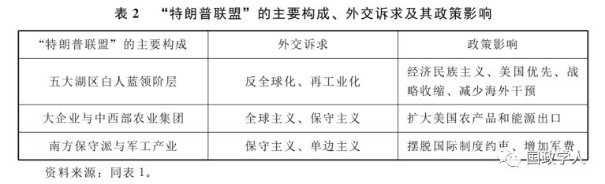

收录于合集

简 介
【作者】 王浩，复旦大学美国研究中心讲师
**【 编辑】**邢 戎
【校对】 黄运涛
【来源】 《当代亚太》2019年第1期
内容提要
美国的对华政策一直以来都是地缘政治与国内政治两种逻辑共同作用的产物。冷战后，由于国际体系结构与美国国内政治结构分别出现单极化与两极化的发展趋势，地缘政治逻辑在美国对华政策制定中的重要性显著下降，国内政治逻辑的影响则迅速上升。与之相应，经济取代安全成为中美关系的首要议题。自奥巴马政府执政起，随着中美两国步入战略竞争时代，地缘政治在美国对华政策制定中的重要性再次突显，并成为未来中长期中美战略互动的决定性变量。然而在这一宏观背景下，不同时期美国对华政策连同中美战略竞争的主题却是由美国国内政治所界定的：从奥巴马政府到特朗普政府，变化了的国内政治动因促使上述主题经历了从基于自由主义的规则约束与多边制度竞争到基于现实主义的合作型施压与双边经济竞争的演化。因此，美国国内政治的变化是观察今后美国对华政策走向的重要窗口。
【关键词】中美关系；地缘政治；美国政治；战略竞争；特朗普政府
正文
**1
**
战略竞争时代中美关系的新背景
近年来，美国国内持续进行着一场对华政策大辩论。 这场辩论的核心议题是：自 1972年中美关系正常化起，美国的对华接触政策（ engagement **） ——主要由安全上的战略克制与经济上的自由主义构成——是否失败了？**可以说，这场辩论不仅是冷战结束以来美国国内规模最大的一次，而且也是内容最深刻、受关注度最高的一次。之所以如此，直接原因在于中美两国的实力对比连同各自的战略选择出现了显著变化：一方面，中国经济和军事实力的迅速崛起、特别是与美国经济和军事实力差距的不断缩减，使两国在国际体系层面出现了“结构性矛盾”，这一矛盾在2008年国际金融危机爆发后被越来越多的美国学者描述为崛起大国与守成大国之间、“老大”与“老二”之间难以摆脱的“修昔底德陷阱”；另一方面，从2009年奥巴马政府执政尤其是2012年中共十八大开始，在美国致力于推进全球战略收缩的同时，中国的对外战略却逐步完成了从“韬光养晦”到“奋发有为”的转型。可以说， 实力对比与战略选择的同时变化所引发的 “共振”，加剧了美国战略界的焦虑。
这种焦虑反映出自奥巴马政府执政起，美国对华政策制定的背景已经出现了根本性变化。 **1949 年以来，美国的对华政策主要经历了三个阶段的变化。**从1949年到1971年，美国的对华政策表现为遏制（战略制衡＋经济民族主义）。从1972年到2008年，美国对华政策的核心特征是接触。自2009年起，随着中美战略竞争态势的日益显著，美国的对华政策开始进入一个新的过渡和调整阶段。例如，奥巴马政府致力于从维护美国主导的自由主义国际秩序出发，将迅速崛起的中国视为这一秩序的挑战者，因而多边主义的国际制度竞争与规则约束分别成为该阶段中美互动与美国对华政策的主题。然而特朗普政府执政后，美国对华政策的焦点却迅速从国际秩序议题转向双边经贸议题，其现实主义导向与反多边主义取向使得中美博弈的重心由多边制度竞争演变为双边经济竞争。
那么，为何美国的对华政策自2009年开始呈现更大的不确定性与不稳定性？我们又该如何理解中美关系的“战略竞争时代”？笔者认为， 美国对自身国家核心利益的界定及其相应战略选择的变化是一个较好的分析切入点。 自二战后成为全球首屈一指的超级大国以来，维护自身全球地位始终是美国至关重要的国家总体核心利益。在这一总体利益之下，安全、经济、价值观以及国际秩序的稳定等是其更为具体的核心利益，并且在不同时期，这些具体核心利益的重要性又因其对维护总体核心利益的不同价值，存在明显的先后次序，这就决定了美国对外战略及对华政策的主要目标及基本取向。
在冷战时期，安全是美国首要的具体核心利益。因此，美国对外战略和对华政策制定的核心逻辑来自地缘政治，其最终目标在于遏制苏联扩张带来的安全挑战，维护美国的全球战略优势。 为此，美国在对华政策上先是对作为苏联阵营主要成员的中国进行遏制，后来又基于美苏、中苏战略态势的变化务实地调整了对华政策，从遏制转向了接触。从实践及其效果看，冷战后期美国的对华接触政策无疑是成功的：中美之间的协调与合作在安全上成为牵制苏联扩张、最终使得美国赢得冷战的重要因素之一。
冷战结束后，在美国各项国家核心利益的排序中，经济取代了安全的首要地位。 尽管“九一一”事件使得安全的重要性有所回升，但已无法与冷战时期相提并论。因此， 后冷战时代美国的对外战略和对华政策制定的核心逻辑来自国内政治，即致力于运用自身经济、战略和技术优势，通过引领经济全球化、 保持经济繁荣而回应国内民众的利益关切并维护其唯一超级大国的地位。例如，在后冷战时代的首次美国总统大选中，民主党人比尔·克林顿依靠“是经济，傻瓜（It’s The Economy，Stupid！）”的口号出人意料地击败时任总统、“冷战英雄”老布什入主白宫，而在克林顿政府时期出台的三份美国《国家安全战略》报告中，经济始终是最重要的议题。基于此，这一时期美国的对华接触政策主要出于中美经济互补性极强的现实，以及通过接纳中国成为其主导的冷战后国际体系的参与者和建设者，增强自身的国际领导力和秩序稳定性，最终维护其“一超”地位。从实践及其效果看，冷战后美国的对华接触政策也是成功的：美国从中美关系中得到了切实的经济利益，这对于其收获冷战后国内经济发展的巨大红利、维护其主导的国际秩序的稳定，进而稳固其全球地位都具有举足轻重的战略意义。
2008年全球金融危机爆发以来，世界政治、经济和安全格局出现的深刻变化，使美国很难再像冷战时期及冷战结束初期那样对自身核心利益进行明确和稳定排序。虽然维护自身“一超”地位这一总体利益没有变化，但经济、安全与国际秩序稳定等具体利益如何定位，是美国面临的战略难题之一。这就导致中美关系的发展失去了冷战后期以及冷战结束初期两个阶段所拥有的明确和稳定的战略基础（基于地缘政治逻辑遏制苏联的安全威胁与基于国内政治逻辑实现经济繁荣），而陷入一种漂移状态。例如，中国在经济、安全与维护既有国际秩序稳定等美国最为关注的国家核心利益上，都与之形成了合作与竞争并存的关系，并且这种合作与竞争进入到一种同时增强的“新常态”之中。因此， **战略竞争时代中美关系的基本特征在于，美国越来越将崛起的中国视为一个全方位的战略竞争者与挑战者，相应地， “地缘政治逻辑—安全维度”取代了“国内政治逻辑—经济维度”成为美国对华中长期战略制定的出发点；**在这一宏观背景下，美国在不同阶段对自身具体核心利益排序的调整及其反映出的对华战略诉求的差异化，构成了美国对华政策演变的微观动力。
基于上述分析，本文致力于进一步探讨的问题是：自中美进入战略竞争时代以来，美国在不同阶段对自身对外战略核心利益出现差异化排序的决定因素是什么？这一因素对于美国对华政策的调整以及中美战略竞争主题的变化产生了怎样的影响？战略竞争时代美国对华政策的这一特点又能为我们分析中美关系的走向提供何种逻辑线索？笔者将通过引入美国国内政治变量，结合2009年以来美国对华政策的演变寻求上述问题的答案。
**2
**
界定国家利益：国内政治与美国对外战略变迁（ 2009～2018）
冷战后，国际体系结构出现的根本变化以及“单极时刻”的到来，使得“国家利益”对美国而言不再像冷战时期那样可以被清晰地界定。尽管通过引领全球化实现经济繁荣成为冷战结束初期美国最为优先的战略选择，但2008年国际金融危机的爆发以及由之加速推进的国际战略格局的变化，使得美国在维护自身安全、经济、价值观以及国际秩序稳定等各项国家核心利益上，都感受到了越来越明显的压力。在这一背景下，美国国内政治成为界定不同时期国家利益优先次序以及美国对外战略基本取向的核心变量。
**国内政治在美国对外战略制定的过程中之所以开始发挥日益重要的作用，一方面是上文提到的冷战后国际体系和国际结构 “单极化”的结果，另一方面则是源于美国国内政治结构越来越趋向“两极化”。**这两方面因素的共同作用，使得民主、共和两党在包括军费开支、贸易政策、海外干预以及国际合作等美国对外战略的各个主要领域，都难以达成有效的共识和妥协，党争（Partisanship）随之从国内公共政策领域扩展到对外政策领域。这一现象的出现，植根于两党政治精英所代表的政治联盟在对外战略方面截然不同的利益诉求。也就是说，在后金融危机时代，两党在“如何维护美国的全球地位”这一问题上给出了不一样的答案。 就奥巴马政府而言，后金融危机时代的美国要想维护其全球地位，就必须将主要精力及资源用于 “国内建设”（nation－building），在全球战略层面收缩战线、减少军费开支与海外干预、降低对外战略成本，“不做蠢事”（ Don’t ****do ****stupid ****stuff ）；同时运用自由主义、多边主义、盟友体系与国际制度的力量，维护美国主导的既有国际秩序的稳定，避免潜在的战略挑战者威胁上述秩序。 这一战略取向本质上反映出了民主党所代表的“东北部—太平洋沿岸”政治联盟的对外战略利益和意识形态诉求。冷战后，随着经济全球化进程的深入推进，美国国内的产业结构和社会结构出现了深刻变化。一方面，制造业的不断衰落与经济金融化趋势的持续发展致使民主党传统的支持者———五大湖区“铁锈带”（Rust Belt）白人蓝领阶层———主张政府将战略重点转移到应对国内经济、社会问题而非全球扩张；力图扭转全球化对于美国制造业构成的冲击，创造更多的制造业就业岗位，同时在贸易问题上支持保护主义。另一方面，全球化的突飞猛进也使得东西海岸源源不断涌入的广大少数族裔、外来移民以及受过高等教育的年轻人及白领阶层成为民主党日益倚重的国内政治基础，而他们作为这一进程的受益者，更加认同自由国际主义的外交政策取向，其中，少数族裔和外来移民同时要求政府“要黄油不要大炮”，提供更多社会福利并提高最低工资。
基于此，奥巴马政府的对外战略致力于平衡与统筹上述政治联盟的外交利益诉求，以一种低成本的方式维护美国的霸权地位。以上述两部分国内社会力量所构建的“奥巴马联盟”决定了奥巴马政府时期美国对外战略的总体取向与基本目标（见表１）。

**就特朗普政府而言，其对外战略所追求的核心目标和主要推进手段 ——“使美国再次强大”与“美国优先”——则植根于２０１６年美国大选所反映出的国内政治力量重组进程的开启。**这一重组集中表现为，２０世纪８０年代开始由民主党人构建的美国东北部政治联盟出现了重大分裂。一直以来，这一联盟都是由新英格兰（New England）、中大西洋（Middle Atlantic）与五大湖区的“铁锈带”三部分构成，但以白人蓝领阶层为主体、以传统制造业为主导产业的“铁锈带”各州在２０１６年的总统大选中几乎全部倒向共和党并成为特朗普的坚定支持者，进而推动形成所谓的“特朗普现象”。 这一现象使美国政治在冷战后两党极化的基础上出现了共和党内部的分裂和极化，即衍生为一种 “双重极化（ two －level ****polarization **） ”结构。这进一步恶化了美国国内的政治生态，形成了民主党与共和党、共和党建制派—全球主义者与反建制派—本土主义者之间的尖锐对立和冲突。**从特朗普政府执政两年多来的实践看，低迷的民调支持率、两党政治的巨大掣肘以及社会矛盾的持续深化，都使得特朗普政府在政治上对于自身关键选民群体———以白人蓝领阶层为代表的反建制力量和本土主义者———的依赖日益加深，甚至形成了一种紧密的利益捆绑态势。这也就意味着，这一政治联盟的利益诉求已经成为特朗普政府内政、外交政策制定的首要甚至决定性变量，国内政治对于美国对外政策的界定作用因此愈发显著。
在对外战略领域，特朗普核心政治联盟的主要利益诉求在于改变全球化给他们带来的不利冲击，如贸易逆差不断扩大、制造业持续外流、制造业相关就业岗位减少以及收入增长落后于通货膨胀等，希望美国减少不必要的海外干预、降低对外战略成本、摆脱来自国际制度、多边主义和盟友体系的约束，在处理与外部世界的关系时，以美国的现实利益尤其是经济利益为优先考虑。基于此，特朗普政府执政后始终以经济民族主义为抓手，致力于缩减美国的对外贸易逆差、推动制造业回流本土，同时力图扩大基础设施领域的投资、进行战略收缩、减少海外干预、与盟友分摊防务开支，以及通过频频退出多边性国际组织摆脱来自盟友体系以及国际制度和多边主义的约束。当然，特朗普政府对外战略中的单边主义取向也是共和党传统外交理念的体现，并且其强调大幅增加军费开支、在安全问题上采取更为积极和强硬的态度，同时将扩大美国的农产品和能源出口等作为施政重点的做法，也反映出了主流共和党政治精英及其相应政治—社会力量的利益诉求和意识形态偏好（见表２）。

从以上分析可以看出，美国对外战略的制定在奥巴马政府时期和特朗普政府时期建立在全然不同的国内政治逻辑基础上。这种逻辑差异在外交实践中分别体现为将维护美国主导的国际秩序的稳定与推进美国的对外经济贸易利益作为首要核心利益与优先关切，并且为了实现这种差异化的利益与关切，美国所采取的对外战略手段也经历了从基于自由主义和多边主义的国际制度竞合到基于现实主义和单边主义的国际经济竞争的演化。上述事实表明，在美国这样一个高度多元化的社会结构与代议制民主的政治结构组合之下，不同的社会利益和社会力量都拥有表达自身对外政策诉求的机制和渠道，因此，美国的国家利益本身就是一个难以被明确、稳定和统一界定的概念，而 **在冷战后日趋极化和分裂的国内政治 —社会背景，以及“一超多强”的国际体系缺乏一个明确和对等的战略对手的背景下，美国的国家利益实质上是被两党政治精英所分别代表的截然不同甚至相互冲突的国内政治—社会利益所建构和界定的。**正因如此，美国的对外战略（包括对华政策）才表现出阶段性和不稳定性的特征。
**3
**
国内政治与美国对华政策的演变：从奥巴马到特朗普
结合中美战略竞争时代美国对华中长期战略的制定逻辑，以及２００９年以来美国国内政治对其国家利益界定连同对外战略走向影响的研究，本部分将重点分析这一时期美国对华政策演变的动因。 依据本文提出的 “地缘政治—国内政治”双重逻辑框架，笔者将探讨在不同的国内政治逻辑下，美国对华政策连同中美战略竞争主题从奥巴马政府到特朗普政府所经历的变迁，以此论证国内政治变量所发挥的界定作用。
（一）战略竞争时代美国对华中长期战略制定的地缘政治逻辑
如前所述，自奥巴马政府执政时起，中美关系面临的战略背景出现了深刻变化，这种变化可以被简要概括为两国步入了“战略竞争时代”，并且这一时代的到来是由地缘政治逻辑所决定的。概而言之，这一地缘政治逻辑体现在三个方面。首先，中国所在的亚太地区对美国而言开始具有越来越重要的地缘战略价值。根据尼古拉斯·斯皮克曼的地缘政治理论，亚太地区作为欧亚大陆的边缘地带和工业中心，不可避免地会成为霸权角逐的主战场。因此，美国加大向该地区的资源投入实际上是一种战略 “纠偏”行为，以更好地维系自身的全球霸主地位。第二，随着世界经济的中心由大西洋沿岸逐渐转移到太平洋沿岸，中国所在的亚太地区已成为世界经济发展的新引擎。２００８年金融危机后，亚太地区的经济增长占全球经济增长的７０％，对于金融危机后身处经济困境的美国而言，分享亚太发展红利、参与亚太经济一体化是一种逻辑的必然。第三，随着冷战结束以来中国的持续、快速崛起以及美国由全球战略过度扩张而引发的相对衰落，一方面，中美开始呈现出“崛起国—主导国”二元关系所特有的“结构性矛盾”；另一方面，亚太地区的权力格局已逐步从美国单极霸权转型为中美“双领导体制”，并面临对美国不利的变动趋势。正如政治学家塞缪尔·亨廷顿多年前预测的那样，“中国这个亚洲最大国家的经济增长会不断扩大其在该地区影响的事实，以及恢复其在东亚传统霸权的可能性，将迫使其他国家要么‘搭车’和适应这一发展，要么‘用均势来平衡’中国的影响”。
基于此，在中美战略竞争时代，地缘政治逻辑决定了美国对华中长期战略制定的总体方向，那就是将自身越来越多的战略资源投向中国及其所在的亚太，通过牵制中国的崛起实现维系其全球地位这一总体国家核心利益的目标。 然而，宏观的地缘政治逻辑无法解释美国对华政策在实践中运作的具体方式及其在不同阶段的重点和主题。例如，中美两国在关乎美国核心利益的不同领域——安全、经济、价值观以及国际秩序稳定——的竞争方式与博弈重点实际上存在很大差异，结果往往导向不同的战略互动模式。因此，单靠地缘政治逻辑无法解释美国从奥巴马政府到特朗普政府对华战略竞争主题从多边制度竞争到双边经济竞争的演化。为了解决这一问题，笔者将引入美国国内政治变量，以此从更为微观的层面挖掘美国对华政策演化的逻辑。
（二）多边制度竞争：国内政治与奥巴马政府时期美国的对华政策
上文已经表明，“奥巴马联盟”的对外战略诉求推动奥巴马政府时期美国外交的根本目标在于在全球战略层面收缩战线、减少军费开支与海外干预、降低对外战略的成本，同时运用自由主义、多边主义、盟友体系与国际制度等政策手段，维护美国主导的既有国际秩序的稳定，避免潜在的战略挑战者威胁这一秩序。就对华政策而言，奥巴马政府将中国视为美国主导的国际秩序的最大挑战者和威胁者，因而在全球战略收缩的背景下，美国致力于通过上述政策手段同中国展开制度竞争，在控制竞争成本的基础上避免中国成为亚太地区的主导国。
经过从奥巴马政府就任起两年多的战略酝酿，美国自２０１１年下半年开始以外交、军事和经济三管齐下、相互配合的方式，使其以“亚太再平衡”为表现形式的对华牵制和竞争政策进入实质推进阶段。 在外交上，美国致力于广泛参与亚太地区既有的多边国际机制和区域合作架构，并极力密切与本地区主要国家和区域组织的关系，防止中国地区影响力的进一步上升。 冷战结束以后，亚太地区的形势发生了根本性变化，尤其是伴随经济一体化的加速发展和意识形态因素的急剧淡化，美国在冷战期间成功运行了近半个世纪并以其为核心建立的双边联盟体系，即“轴幅”（hub－and－spoke）体系面临新的挑战。为在维持自身地位的同时回应国内政治联盟关于降低对外战略成本的诉求，奥巴马政府试图建立一种更具包容性的多边合作机制。在此期间，美国不仅积极加入了《东南亚友好合作条约》，而且还广泛参与东盟地区论坛以及东亚峰会等主要区域性多边国际组织，并力图主导议事日程，最终实现政治领导。此外，美国不断加深与亚太地区传统盟友如日本、韩国、菲律宾和澳大利亚等国的关系，积极挖掘新伙伴，与新加坡和印度等国来往日益频繁。同时，美国还逐渐改变了以往在南海等海洋领土主权争端中的“不介入”政策，开始积极寻找并利用海洋问题这一牵制中国的新支点大做文章。
军事上，在国内政治联盟要求削减军费开支的背景下，奥巴马政府对华牵制与竞争的重心一方面在于强化与传统盟国的合作并不断寻求建立新的军事伙伴关系，从而通过多边主义的方式降低战略成本；另一方面则在压缩战略资源的前提下极力调整军事部署以将主要精力投放于亚太。 例如，在２０１２年１月５日由国防部出台的新军事战略报告中，美国决定未来１０年把６０％的海军力量部署在亚太。不难看出，这一调整的目的是进一步巩固美国在亚太的军事主导地位，而奥巴马政府的外交实践也证明，美国在亚太地区的军事动作频繁，并且涉及范围广泛。在朝鲜半岛，美国不断加强与韩国的安保合作。在日本，美国继续突出美军的“前沿部署”，不仅在冲绳部署“鱼鹰”直升机，还明确表示将钓鱼岛纳入《美日安保条约》的适用范围，强化美日同盟作为“地区与世界安全不可或缺的支柱”之地位。２０１３年朝鲜核试后，美国开始在日本部署新的Ｘ波段雷达。在南海问题上，奥巴马政府除在言辞上高调干涉外，在行动上也积极跟进。例如，美国不仅向菲律宾等国出售武器，还决定在新加坡轮驻先进的濒海战斗舰。在澳大利亚，奥巴马政府于２０１１年１１月宣布，美国将在其北部的达尔文港轮驻２００～２５０名海军陆战队官兵，以巩固“第二岛链”防线。此外，美国还特别加强了与印度的军事合作，并将这种关系提升到战略层面。军事上的“再平衡”还体现为美军在该地区不断提升的作战能力。例如，奥巴马政府提出了“空海一体战”（Air－Sea Battle）的作战新理念，将海、空军纳入统一作战体系，以强化联系网络、提升作战规模和能力，增强战略威慑。
**经济上， “奥巴马联盟”以自由主义和多边主义为代表的对外战略取向体现为力图通过推进跨太平洋伙伴关系协定（TPP）谈判，建立以美国为中心并绕开中国的泛太平洋经济合作区。**长期以来，亚太地区的经济发展和一体化势头使美国虽为全球唯一的超级大国，却无法在经济上全面介入该地区已运行多年的多 边 经 贸 机 制，特别是目前在该地区已经形成了以中国为中心、以市场为导向的自发性经济合作机制。在这种情况下，美国力图推动建立 ＴＰＰ这样一种全新的经济合作模式，目的在于将其作为主导亚太经济合作的工具，以解决 “亚太再平衡”战略的经济路径问题，最终通过在该地区制定一套有利于自身的游戏规则和制度安排，获得同中国进行战略竞争的优势。
总之，在奥巴马政府时期，中美亚太战略竞争集中体现为多边制度竞争，即美国致力于在亚太地区的外交、安全与经济等地区多边主义框架下同中国开展全方位的主导权之争，防止中国的地区影响力取代美国，进而对其主导的国际秩序构成冲击。 **归根到底，这一政策是在中美战略竞争时代的地缘政治逻辑框架下，由美国国内政治特别是 “奥巴马联盟”的对外政策诉求及其利益偏好所界定的。**因此，只有在地缘政治逻辑的基础上，从美国国内政治入手进行研究，才能更加准确地分析其外交实践。
（三）双边经济竞争：国内政治与特朗普政府对华政策的调整
**特朗普政府执政以来，其对外战略的整体取向 ——反全球化与经济民族主义——在对华政策中主要聚焦于双边层面的经贸议题。这一政策调整的国内政治逻辑更为明确和直接。**首先，国内政治逻辑在冷战结束以来美国对外战略制定中的重要性不断上升，特别是当前美国政党重组趋势带来的“双重极化”的政治结构，使得经贸问题本身在特朗普政府的对外战略中占据着首要地位。而作为世界上最大的两个经济体，中美经贸关系又在美国对外经济关系中扮演着关键角色。例如，中国不仅已经跃升为美国的第一大货物贸易伙伴，而且其对美投资的规模也已经大幅超越美国对华投资规模。在美国的５０个州中，已经有多达４７个州拥有来自中国的投资。又如，随着中国济的迅速崛起和产业转型升级的步伐不断加快，中美经贸关系中的竞争性正在逐步取代互补性，两国贸易中存在摩擦的领域随之持续扩大。因此可以说，对华经贸政策的推行效果很大程度上决定着特朗普政府贸易政策的成败。 **从这一事实出发，特朗普政府在对华经贸关系上致力于实现三方面的战略诉求：一是增加对华出口、减少贸易逆差；二是运用关税手段削弱中国制造业产品的竞争力，推动解决美国国内与制造业相关的白人蓝领阶层的就业问题；三是打压 “中国制造２０２５”，延缓中国产业升级和技术进步的进程，维护自身霸权。**从国内政治的角度看，特朗普政府以经贸议题为抓手的对华政策所追求的根本目标是通过稳固核心政治联盟的支持，强化自身国内政治地位，最终推动完成一次有利于共和党的政党重组。为了实现上述目标，特朗普政府自执政起便不断力推以所谓“公平贸易”为旗号、以实用主义和结果导向为理念的对华经济民族主义政策。
特朗普政府对于经贸问题重要性的认知及其从竞选阶段便已付诸实践的战略思维，本质上抓住并加速了美国政治演变的一大趋势，那就是白人蓝领阶层对民主党日益明显的疏离。 根据美国政治学者拉里·巴特尔斯的研究，美国白人作为一个整体对民主党的认同度自２０世纪８０年代以来便始终处于下降态势，其中，高收入白人对民主党的认同度从１９８０年起一直低于共和党，而中低收入白人（即政治学意义上的白人蓝领阶层）对民主党的认同度———相对于共和党———则从１９８０年的＋２０％降至２００４年的＋５％。因此宏观地看，２０１６年美国总统大选的结果是对历史趋势的延续而非突变，只不过“特朗普现象”进一步加速了这一过程并引发了备受瞩目的政治结果。如果考虑２０世纪８０年代以来美国日益加剧的经济不平等主要源于共和党执政时的政策，那么白人蓝领阶层作为社会弱势群体，理应更倾向于民主党及其施政理念。然而，实际发生的政治演变态势反映出的却是更为复杂的美国国内政治逻辑。 其中主要包括：意识形态和传统价值观念对于白人蓝领阶层的投票行为产生了重要影响；经济增长带来的实际收入增加，部分抵消了白人中低收入群体对经济不平等的负面认知，这就意味着他们更关心就业而非福利；民主党的主要经济、社会政策红利被大量少数族裔和外来移民获取，从而大幅减少了白人蓝领阶层的获得感。 基于此不难发现，特朗普政府对华战略中以经济民族主义为内核的经贸政策完全是为了迎合白人蓝领阶层这一核心政治联盟，从而实现维护自身政治利益、稳固执政地位的目标。
**在政策实践中，特朗普政府以经贸议题为抓手的对华战略调整主要经历了两个阶段。首先，从中美元首海湖庄园会晤到特朗普访华，两国在２０１７年主要围绕 “百日行动计划”及“一年行动计划”所涉及的利益分配、政策协调、国内改革以及配套措施等多方面内容，追求通过相互配合与妥协，解决两国经贸关系中存在的突出分歧和矛盾，尤其是回应美方关于中美经贸关系的现状有利于中国而不利于美国的不满。**总的来看，这一阶段美方在谈判的过程中采取了攻势，中方则处于守势。在这一背景下，中美双边经贸关系的发展难免受制于美方所自我界定的利益、目标与议程，而且由这些利益、目标与议程带来的双边经贸关系波动很可能会影响双边关系的整体发展。通过这一阶段两国在经贸议题上的互动可以发现，在特朗普政府奉行建立在国内政治逻辑基础上的经济民族主义对华政策框架下，美国对于中国在经贸领域的合作甚至让步需求不会减弱，经贸议题在特朗普任内将无疑会成为中美关系中的首要议题。在特朗普访华期间，中美两国围绕能源和基础设施等主要领域的合作达成了逾２５００亿美元的经贸协议，这一协议成为特朗普政府对华经贸政策取得阶段性成果的标志。 其次，２０１８年以来，特朗普政府的对华贸易政策开始进入运用加征关税的办法向中国施压，从而实质性减少对华贸易逆差的阶段。 在这一过程中，美方先后宣布对从中国进口的洗衣机、光伏产品、钢铁、铝等加征１０％到１１０％不等的关税，随后又列出了１３００多项中国对美出口商品清单并对其加征２５％的关税；此外，２０１８年４月开始，美国贸易代表办公室（ＵＳＴＲ）依据所谓 “３０１”调查，宣布额外对中国输美的１０００亿美元商品加征关税，美国商务部则对产自中国的钢制轮毂产品发起反倾销和反补贴 （“双反”）调查。面对美方违反世界贸易组织规则和国际贸易原则的单边主义做法，中国进行了有力的反制。２０１８年４月，根据 《中华人民共和国对外贸易法》以及 《中华人民共和国进出口关税条例》相关规定，经国务院批准，国务院关税税则委员会最终决定对原产于美国的大豆、汽车、化工品等１４类１０６项商品加征２５％的关税。随着中美贸易摩擦的持续发酵，２０１８年７月６日，美国开始对３４０亿美元的中国商品加征２５％的关税；作为反击，中国同时开始对同等价值的美国产品加征２５％的进口关税。至此，中美 “贸易战”进入所谓“实战”阶段。此后，美方贸易代表莱特希泽进一步表示，将对价值２０００亿美元的中国对美出口商品加征２５％的关税；中方则制定了将依法对自美进口的约６００亿美元产品按照四档不同税率加征关税，实施日期将视美方行动而定的反击措施。中美“贸易战”的大规模展开表明，经济竞争已经成为当前中美战略竞争的主题和侧重点。尽管２０１８年１２月１日举行的中美元首阿根廷会晤达成了暂停相互加征关税的重要共识并决定开展为期９０天的经贸磋商，从而使“贸易战”迎来缓和甚至“止战”的宝贵时间窗口，但中美经贸关系中的深层结构性问题需要双方长时间的共同努力才能得以有效解决。因此，贸易摩擦仍将是特朗普政府任内中美关系面临的首要议题。
**需要指出的是，在当前美国国内 “双重极化”的政治结构下，国内政治对于特朗普政府对华政策的影响还体现为建制派政治精英—全球主义者的干预和掣肘。**在２０１７年特朗普访华后，以美国国会中的共和党保守派议员、行政部门中具有鹰派背景的官员以及以主流政策智库为代表的建制派政治力量，对特朗普政府的对华政策表现出了越来越明显的不满情绪，认为其过于关注经贸等具体议题，是一种政策上的“短视”，忽视了中国崛起带来的重大地缘战略挑战。 结果是，美国的对华政策从２０１７年底开始出现了一系列转向，突出了地缘政治博弈的因素，这就使得安全竞争有可能成为下一阶段中美战略竞争的主题。 从这个意义上讲，随着美国国内主流政治精英在对华强硬方面达成高度的共识，美国对华政策中的地缘政治逻辑与国内政治逻辑正在走向某种程度的“合一”，这一趋势与冷战时期美国对苏联战略的制定背景存在相当的可比性，那就是当美国面临的地缘政治压力强大到一定程度之时，国内政治—社会力量会搁置彼此的分歧与矛盾，形成较高程度的对外战略共识。这也是学界担心中美两国存在陷入所谓“新冷战”风险的根本原因。
总之，从本部分的分析可以看出，美国对华政策的重点在奥巴马政府时期和特朗普政府时期建立在全然不同的国内政治逻辑基础上，其根源在于民主、共和两党政治精英面对不同的国内政治联盟和变化了的国内政治结构，为实现自身所依靠的国内政治—社会力量的对外政策利益诉求，在对华政策上表现出差异化的战略需求。结果是，这种差异使得中美战略竞争的主题连同美国对华政策的重点在实践中先后体现为基于自由主义的多边制度竞争与规则约束，以及基于现实主义的双边经济竞争与合作型施压。可以说，上述逻辑解释了在中美战略竞争时代的宏观背景下，为何美国的对华政策在不同阶段导向了不同的结果，进而为我们分析今后美国对华政策与中美关系的走向提供了一个新的切入点。需要指出的是， 在美国国内 “双重极化”的政治结构下，两党“建制派—全球主义”政治力量开始越来越从地缘政治逻辑和安全维度思考美国的对华政策，因而安全竞争有可能取代经济竞争，成为下一阶段中美战略竞争的主题。
**4
**
结语
本文的核心观点是，在美国对华政策演变的背后，始终存在地缘政治与国内政治两种逻辑。冷战后，由于国际体系结构与美国国内政治结构分别出现单极化与两极化发展的趋势，地缘政治在美国对华政策制定中的重要性显著下降，国内政治的影响则迅速上升。与之相应，经济取代安全成为中美关系的首要议题。然而自奥巴马政府执政时起，随着中美步入战略竞争时代，地缘政治在美国对华政策制定中的重要性再一次凸显，并成为未来中长期中美双边战略互动的决定性变量。然而在这一宏观背景下，不同时期美国对华政策连同中美战略竞争的主题却是由美国国内政治所界定的： 从奥巴马政府到特朗普政府，变化了的国内政治动因促使上述主题经历了从基于自由主义的规则约束与多边制度竞争到基于现实主义的合作型施压与双边经济竞争的演化。上述演化的动力植根于从奥巴马政府时期到特朗普政府时期变化了的美国国内政治逻辑。 在奥巴马政府时期，面对中国崛起带来的地缘政治压力，美国的应对方式之所以是制度竞争与规则约束，主要源于民主党以东北部—太平洋沿岸政治联盟为核心的国内政治力量，促使奥巴马政府将维护美国主导的国际秩序视为首要对外战略利益，将主要精力和资源用于解决国内的经济和社会问题、减少军费开支、用最小的代价维护美国的霸权地位。基于此，奥巴马政府致力于运用经济、外交和军事等多种方式，以强化多边主义和国际合作主导权为手段同中国进行战略竞争，奉行基于自由主义的对华规制政策。特朗普政府执政以后，美国的对华政策之所以从多边制度竞争转向双边经济竞争，根本原因在于其国内以白人蓝领阶层为核心的选民群体的对外战略利益诉求在于减少美国的贸易逆差、扭转经济全球化进程给他们带来的不利冲击，最终增加就业岗位和经济福利。基于这一变化了的国内政治基础，特朗普政府对华政策的重心迅速转移到了经贸领域，开始奉行基于现实主义的对华合作型施压与跨议题联动政策。然而，在“双重极化”的分裂型政治结构下，美国国内主流的“建制派—全球主义”政治力量则开始越来越突出对华政策中的地缘政治逻辑与安全维度，因而安全竞争有可能取代经济竞争成为下一阶段中美战略竞争的主题。 本文的分析表明，美国国内政治的变化是观察今后美国对华政策走向的重要窗口。
**
**
_ ** _ 本文由国政学人平台编辑首发**
更多阅读
【重磅速递】米尔斯海默：注定失败：自由主义国际秩序的兴衰 | 国政学人
【重磅推荐】巴里·布赞：英国学派视角下的中国崛起 | 国政学人
【国际地位】ISQ杂志：承认国际地位：一种关系方法 | 国政学人
【合法性研究】为什么国家合法性信仰与国际合法性信仰有关？ | 国政学人
【世界秩序】IO杂志：嵌入修正主义：网络、制度与对世界秩序的挑战 | 国政学人
国政学人 （ID：guozhengxueren)
为方便学人及时阅读高质量文章
别忘把国政学人设置 星标 哦~